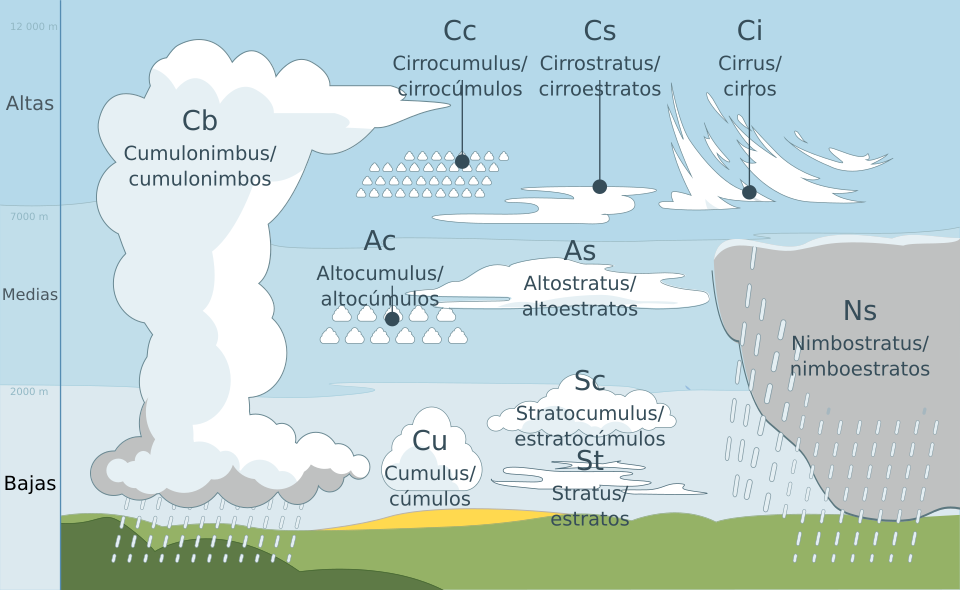

Nubes
¿Sabías qué..?
Las nubes están formadas por pequeñas gotas de agua, pequeños cristales de hielo y además partículas de polvo.
Las nubes se pueden clasificar por la altura a la que se encuentran en el cielo en: nubes bajas, medias y altas. Pero también se pueden clasificar por su apariencia, por ejemplo; color, tamaño y forma.
Existen diez grupos principales de nubes:
Nubes bajas
- Estratos (St). Cercanos al suelo, por ejemplo la neblina -Estratocúmulos (Sc). Llegan a generar lluvias débiles.
- Cúmulos (Cu). Tienen forma de algodón de azucar y también pueden generar precipitaciones.
- Cumulonimbos (Cb). Son nubes que tienen un gran desarrollo vertical ( son muy altas), también se les conoce como nubes de tormenta, por que pueden provocar tormentas intensas e incluso caída de granizo.
Nubes medias
- Nimbostratos (Ns). Son nubes de color gris y generan precipitaciones continuas.
- Altocúmulos (Ac). Son pequeñas nubes de colo blanco o gris que parecen algodones y que forman grupos que pueden cubrir el cielo.
- Altostratos (As). Son nubes uniformes de color grisaseo, pueden cubrir el cielo y dar precipitaciones débiles.
Nubes altas
- Cirros (Ci). Son nubes muy de aspecto muy fino y delgado, incluso parecen hubiera dado brochasos con pintura blanca en el cielo.
- Cirrostratos (Cs). Son nubes formadas principalmente por cristales de hielo, tienen la apariencia de un velo blanco que cubre el cielo.
- Cirrocúmulos (Cc). Nubes pequeñas que parecen algodones, se agrupan en el cielo dando origen al cielo aborregado

Clasificación de nubes por altitud.
Créditos: Valentin de Bruyn / Coton.